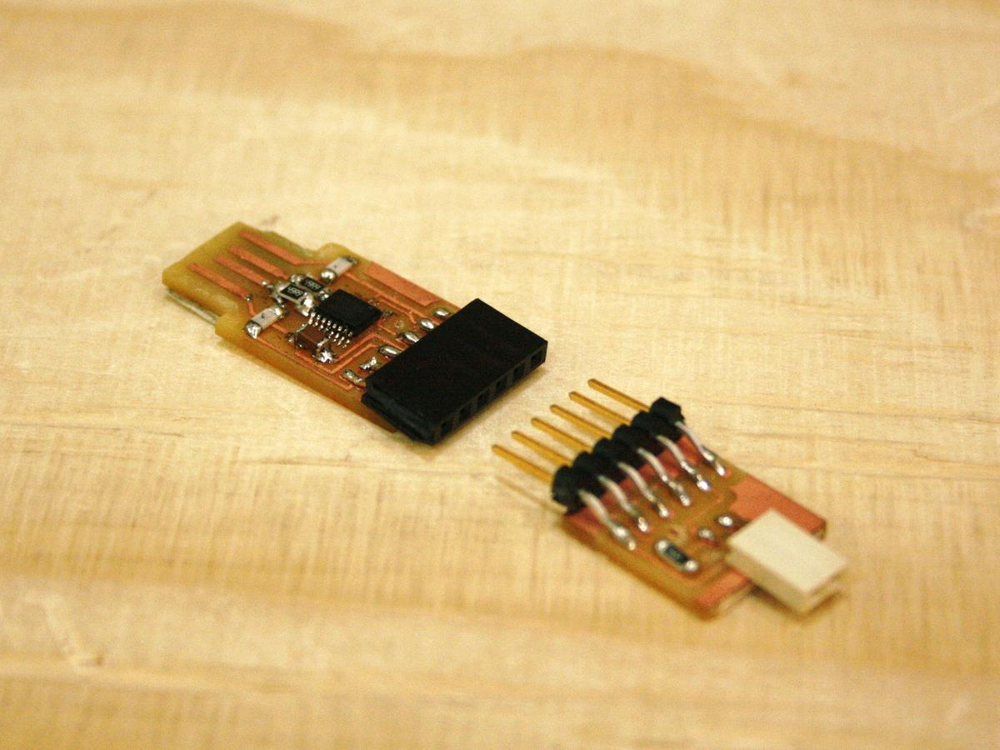
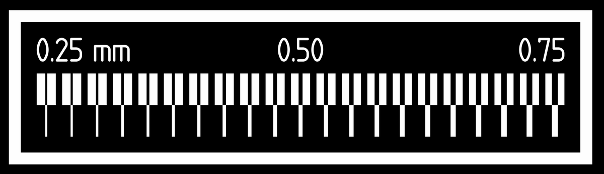

Electronics production
It's the 4th week of the Fab Academy, we're now exploring the process of electronics production: How to make a in-circuit programmer from a printed circuit board (PCB) and several electronic components.

Testing the machine

Making an in-circuit programmer
In-system programming (ISP), also called in-circuit serial programming (ICSP), is the ability of some programmable logic devices, microcontrollers, and other embedded devices to be programmed while installed in a complete system, rather than requiring the chip to be programmed prior to installing it into the system.

FTDI
climb
UPDI
conventional
Milling
The drills are super fragile, we have to manipulate them with extra attention.
Prepare the files (traces and interior)
- Import the PNG in Fabmodules
- Output:
Roland Mill - Process for interior:
PCB traces (1/64) - Process for traces:
PCB outline (1/32) - Machine:
SRM-20 - Speed (mm/s):
4 - x0, y0, z0:
0, 0, 0 - zjog (mm):
12 Calculate&Save
Milling process
- Tape the back of a PCB with double-face tape (don't overlap to avoid different levels)
- Place the PCB on the board of the machine (parallel is better)
- Change the drill depending on the task you're going to achieve (32 or 64)
- Set up the X and Y coordinates depending on the design and the space available on the PCB
- Set up the Z so the drill touch the PCB, even a bit more if necessary
- Load the files and press the
setupbutton.
#### Attention -
Soldering
group assignment
characterize the design rules for your PCB production process
individual assignment
make an in-circuit programmer by milling and stuffing the PCB, test it, then optionally try other PCB processes